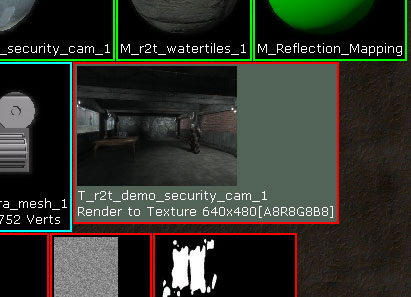
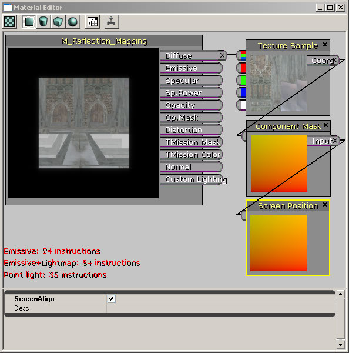

UDN
Search public documentation:
RenderToTextureJP
English Translation
中国翻译
한국어
Interested in the Unreal Engine?
Visit the Unreal Technology site.
Looking for jobs and company info?
Check out the Epic games site.
Questions about support via UDN?
Contact the UDN Staff
中国翻译
한국어
Interested in the Unreal Engine?
Visit the Unreal Technology site.
Looking for jobs and company info?
Check out the Epic games site.
Questions about support via UDN?
Contact the UDN Staff
UE3 ホーム > マテリアルとテクスチャ > Render to Texture
Render to Texture
- Render to Texture
- 概要
- レンダリング ターゲット テクスチャの作成
- テクスチャにシーンをレンダリングする
- 静的キャプチャーの保存
- テクニカルノート
- 例
- 既知の制限事項
概要
レンダリング ターゲット テクスチャの作成
 2 種類の Render to Texture リソースがあり、それぞれ異なるシーンキャプチャー タイプにより使用されることに注意してください。
RenderToTexture - 2D、 反映やポータル シーンキャプチャーに使用される。
RenderToTextureCube - キューブマップ シーンキャプチャーに使用される。
Render to Texture リソースは、シーンのレンダリング時にレンダリング ターゲットとして使用されるテクスチャ サーフィスを作成します。Render to Texture リソースは、少数のプロパティしかファイルに保存することができないことに注意してください。しかし、それはレンダリング目的のみに存在するため、テクスチャサーフィスを実際には保存しません。
最初の Render to Texture リソース作成後、一度シーンキャプチャーにそのリソースが使用されると、デフォルトの色調にされてしまいますが、テクスチャでキャプチャーの結果を見る事ができます。Render to Texture リソースにある幅、高さやフォーマットはいつでも変更可能であり、新しい設定に合うようにその内部のターゲットサーフィスを更新します。
2 種類の Render to Texture リソースがあり、それぞれ異なるシーンキャプチャー タイプにより使用されることに注意してください。
RenderToTexture - 2D、 反映やポータル シーンキャプチャーに使用される。
RenderToTextureCube - キューブマップ シーンキャプチャーに使用される。
Render to Texture リソースは、シーンのレンダリング時にレンダリング ターゲットとして使用されるテクスチャ サーフィスを作成します。Render to Texture リソースは、少数のプロパティしかファイルに保存することができないことに注意してください。しかし、それはレンダリング目的のみに存在するため、テクスチャサーフィスを実際には保存しません。
最初の Render to Texture リソース作成後、一度シーンキャプチャーにそのリソースが使用されると、デフォルトの色調にされてしまいますが、テクスチャでキャプチャーの結果を見る事ができます。Render to Texture リソースにある幅、高さやフォーマットはいつでも変更可能であり、新しい設定に合うようにその内部のターゲットサーフィスを更新します。

サーフィスに Render to Texture リソースを適用時、通常の静的テクスチャリソースのように、TextureSampler (テクスチャサンプラー) マテリアル式を使用してマテリアル内に設置できます。 次のパートでは、実際にどう何かを Render to Texture リソースにレンダリングするかを紹介します。HDR サポート
今時点では、RGBA Render to Texture リソースのみ作成されます。浮動点 HDR ターゲットのサポートは、今後される見込みです。テクスチャにシーンをレンダリングする
SceneCapture2DActor (シーンキャプチャー2Dアクタ)
SceneCapture2DActor を用いて、まるで視錘台の平面のサーフィスに投影されたようにシーンをキャプチャーすることができます。 レベルにアクタを配置時、シーンのキャプチャーしたビューを示す視錘台が表示されます。アクタの位置と方向は、キャプチャーしたシーンのビューを配置したり、方向付けするのに使用されます。SceneCapture アクタは、スクリプト化された Kismet シーケンスにより作動したい場合、または物理により操作したい場合のため、他のアクタに添付することも可能となっています。 このアクタは、SceneCapture2DComponent 用のコンテナーであることに注意してください。SceneCapture コンポーネントタイプの詳細については、後に本書で説明します。
レンダリングが起こる前に、SceneCapture アクタには、レンダリングするテクスチャ ターゲットが必要です。SceneCapture コンポーネントの TextureTarget プロパティを設定することで、Render to Texture リソースを SceneCapture アクタに割り当てることができます。
このアクタは、SceneCapture2DComponent 用のコンテナーであることに注意してください。SceneCapture コンポーネントタイプの詳細については、後に本書で説明します。
レンダリングが起こる前に、SceneCapture アクタには、レンダリングするテクスチャ ターゲットが必要です。SceneCapture コンポーネントの TextureTarget プロパティを設定することで、Render to Texture リソースを SceneCapture アクタに割り当てることができます。
SceneCaptureCubeMapActor (シーンキャプチャー キューブマップ アクタ)
SceneCaptureCubeMapActor は、6 つのパスでシーンがレンダリングされなければいけないことを除き、SceneCapture2DActor と同様です。各キューブマップフェイスにつき 1 つのパスとなっています。これは明らかに高くつく作業なので、低いレベルのディティール設定を使用することをお薦めします。 また、キャプチャーは、"RenderToTextureCube" リソースをそのターゲット テクスチャとして使用する事を求めます。デフォルトの"RenderToTexture" リソースは、単独の2Dサーフェスのみ作成し、キューブマップシーンキャプチャーには使用できません。"RenderToTextureCube" の作成のステップは、"RenderToTexture" リソースの作成と同様です。 このアクタは、SceneCaptureCubeComponent 用のコンテナーであることに注意してください。SceneCapture コンポーネント タイプの詳細については、後に本書で説明します。SceneCaptureReflectActor (Dynamic Reflections) (シーンキャプチャー反射アクタ (動的反射))
SceneCaptureReflectActor は、シーンの動的反射をします。このタイプのアクタをレベルに設置することで、反射され、ミラーリングサーフェスにきちんとクリップされたシーンのビューキャプチャーを作成します。ミラーサーフィスは正しい位置に置かれているので、アクタと同じ方向に向いています。また、アクタの位置付けはミラープレーンの位置を変えるので重要であり、それゆえにシーンのクリップした領域となっているのです。 反射結果についてひとつ重要なことは、True に設定された ScreenAlign オプション、および赤、緑のチャンネルのみを使用する ComponentMask (コンポーネントマスク) マテリアル式で、 ScreenPosition (スクリーンポジション) マテリアル式を使用して、Render to Texture リソースにアクセスすることです。テクスチャが、スクリーン全体を覆うようにマップされることを反射計算が想定するため、これが必要とされます。次のイメージは、所要なマテリアルノードについてさらにわかりやすく説明しています。
このアクタは、ScreenCaptureReflectComponent 用のコンテナーであることに注意してください。SceneCapture コンポーネント タイプの詳細については、後に本書で説明します。SceneCapturePortalActor (シーンキャプチャー ポータルアクタ)
SceneCapturePortalActor は、ポータルのサーフィスにマップされたように、他の場所の視点からシーンをレンダリングすることができます。 このアクタは、SceneCapturePortalComponent 用のコンテナーであることに注意してください。SceneCapture コンポーネント タイプの詳細については、後に本書で説明します。SceneCaptureComponents (シーンキャプチャー コンポーネント)
このコンポーネントは、TextureTarget にシーンをキャプチャーすることができます。各コンポーネントは、レベルにシーンキャプチャー検索を設置する作業をするため、バックバッファにレベルのメインビューがレンダリングされる前に、シーンは個別のパスでレンダリングされます。そのコンポーネントを他のタイプのアクタにも添付することができます。 すべての SceneCaptureComponent タイプには、修正できる共通のプロパティがあります。 各コンポーネントは、シーンをレンダリングするターゲットテクスチャがあります:- TextureTarget (テクスチャ ターゲット) - シーンキャプチャー仕上げ用の Render to Texture リソース。シーンキャプチャーは、割り当てられたターゲットテクスチャがない限り、レンダリングをしないことに注意してください。
- bEnablePostProcess (ポストプロセスを有効) - シーンに適用されたポストプロセスのステップをトグルする。
- bEnableFog (フォグを有効) - あらゆるハイト フォグレンダリングをトグルする。
- ClearColor - テクスチャ ターゲット用の背景 Clear Color。
- ViewMode - 異なるビューやライティング設定を列挙する。可能なモードは:
| ﾓｰﾄﾞ | 解説 |
|---|---|
| SceneCapView_Lit | 動的シャドウとライティングでの UE3 のデフォルト レンダリングモード |
| SceneCapView_Unlit | シーンをレンダリング時、シャドウまたはライティングパスを使用しない。 |
| SceneCapView_LitNoShadows | デフォルトのリットレンダリングモードと同様。ただし、動的シャドウを除く。 |
| SceneCapView_Wire | シーンにある全てのジオメトリはワイヤーフレームモードを使いレンダリングされる。 |
- SceneLOD - シーンにある全てのジオメトリ用の Level of Detail (LOD) 設定を最大にする。0 値は LOD 設定が最も高いことを意味する。(現在実装されていません。)
- FrameRate (フレームレート) -シーンをキャプチャーするため FPS (フレーム/秒) レートを設定する。例えば、値が 30 の場合、30 FPSでシーンをキャプチャーします。また、FrameRate 値が 0 の時、シーンは一度のみキャプチャーされることに注意してください。 これは、特定のシーンキャプチャーを継続的にアップデートする必要がないことがわかっている時に便利です。
- PostProcess - キャプチャによって使用されるポストプロセスチェーンです。各シーンキャプチャーによって使用されるカスタムのポストプロセスチェーンを指定することができます。(このページの最後にある『既知の制限事項』を参照してください)。
SceneCapture2DComponent (シーンキャプチャー 2D コンポーネント)
このコンポーネントは、SceneCapture2DActor で述べられた、シーンの 2D キャプチャーのレンダリングを処理しています。このタイプのレンダリングに必要な状態を管理し、個別のパスでキャプチャーをレンダリングするため、現在のシーンに FSceneCaptureProbe2D を追加します。 次のプロパティは、このタイプのキャプチャーコンポーネントに限定されます:- FieldOfView - ビュー投影を計算するため使用した水平なフィールドのビュー。
- NearPlane - 視点側のクリッププレーンを意味する、調節済みビュー距離スクリーン。
- FarPlane - 遠いクリッププレーンを意味するビュー距離調節済みスクリーン。 遠いクリッププレーンの後ろに完全になってしまっているジオメトリは抜粋されます (レンダリングされません)。 FarPlane (遠いプレーン) 値を減少することは、パフォーマンスを向上します。
- bUpdateMatrices - このフラグが False と設定された場合、ビューと投影マトリックスは自動更新されず、手動で設定しなければいけません。これは、どうシーンがレンダリングされるかを、さらにコントロールする必要があるジオメトリコードに便利です。
SceneCaptureCubeMapComponent (シーンキャプチャー キューブマップ コンポーネント)
このコンポーネントは、SceneCaptureCubeActor で述べたように、キューブ マップ レンダリング ターゲット テクスチャのフェース用の 6 つのキャプチャー パスのレンダリングを処理します。このタイプのレンダリングに必要な状態を管理し、個別のパスでキャプチャーをレンダリングするため、現在のシーンに FSceneCaptureProbeCube を追加します。- NearPlane (近いプレーン) - 視点側のクリッププレーンを意味する、調節済みビュー距離スクリーン。
- FarPlane (遠いプレーン) - 遠いクリッププレーンを意味するビュー距離調節済みスクリーン。 遠いクリッププレーンの後ろに完全になってしまっているジオメトリは抜粋されます (レンリングされません)。FarPlane (遠いプレーン) 値を減少することは、パフォーマンスを向上します。
SceneCaptureReflectComponent (Dynamic Reflections) (シーンキャプチャー反射コンポーネント (動的反射))
このコンポーネントは、現在のビュー反転や、プレーンの後ろにあるすべてのジオメトリをクリップするためミラープレーンを使用しているシーンのレンダリングを処理します。このタイプのレンダリングに必要な状態を管理し、個別のパスでキャプチャーをレンダリングするため、現在のシーンに FSceneCaptureProbeReflect を追加します。- ScaleFOV - 使用されていません。
SceneCaptureParaboloidComponent (シーンキャプチャー パラボロイド コンポーネント)
現在サポートされていません。SceneCapturePortalComponent (シーンキャプチャー ポータル コンポーネント)
このコンポーネントは、他の場所でポータルを見たようにシーンをレンダリングします。現在のポータルの方向と、キャプチャーを方向づけるための距離ポータルの方向の両方を使用します。現在のポータルと距離ポータルは、独自の 2D Render to Texture リソースを使用することに注意してください。- ViewDestination - このポータル用のビューロケーションでのアクタ。これが、シーンがキャプチャーされる場所です。
- ScaleFOV - 使用されていません。
静的キャプチャーの保存
静的キューブ マップキャプチャー
ダイナミック Render to Texture リソースから静的テクスチャの作成で、非常によく用いられる方法の一つは、独自のシーンから Cubemap を作成することです。:- Cubemap がキャプチャーされたい場所で、SceneCaptureCubeMapActor をマップに配置します。
- 新しい RenderToTextureCube リソースをパッケージに作成します。これは、シーンがレンダリングされるダイナミック Render to Texture ターゲットになります。
- ステップ 2 から RenderToTextureCube をSceneCaptureCubeMapActor の TextureTarget プロパティへ割り当てます。
- これでシーンが、ダイナミック Render to Texture ターゲットにキャプチャーされました。右クリックして、「静的テクスチャを作成...」を選択し、このスナップショットをダイナミックテクスチャから保存することができます。 これをするたび、6 面に対応したテクスチャと共に新しい静的 Cubemap テクスチャが作成されます。
- また、 SceneCaptureCubeMapActor をレベルのほかの場所に移動することもでき、静的キャプチャーにはステップ 4 を繰り返し行います。
- 一度、静的キューブテクスチャの生成が終わると、それに伴う、ゼロから作成した RenderToTextureCube リソース同様、レベルに追加した一時的な SceneCaptureCubeMapActor を削除することができます。
例